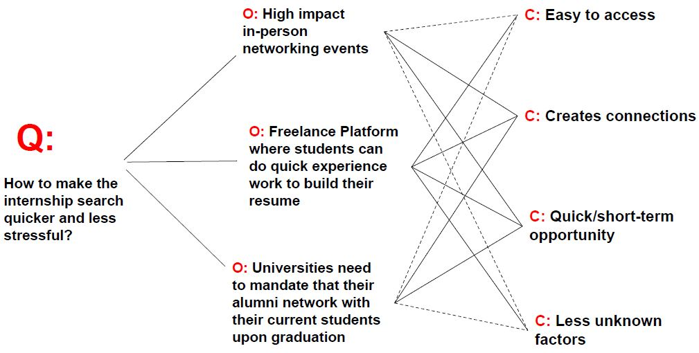
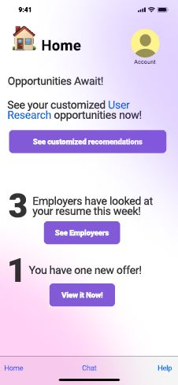
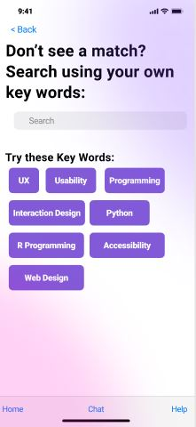
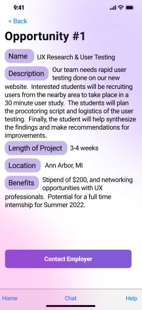
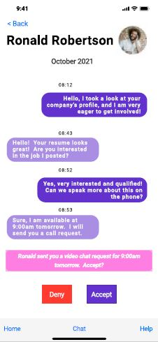
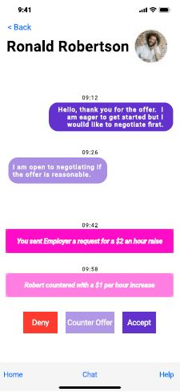
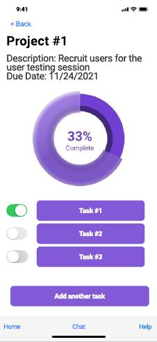
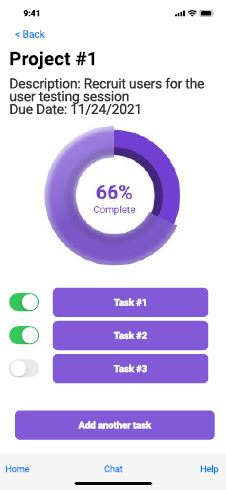

In addition to user research skills, I have also gained several competencies surrounding design, prototyping, and the product lifecycle. Last semester, I developed a pitch and accompanying prototypes for an internship-search app for students. I challenged myself to take this project all the way to a mid-fidelity prototype, which allowed me to ideate and refine my product at several stages in the development process. I strove to really understand who my customer base is and what their needs are to confidently develop a concept that provides utility and function. I then took the time to develop personas, conduct a competitor analysis, and scope the app and its key features. The wireframing and prototyping stage involved several rounds of sketches and wireframes before using Figma to develop the design and the interactions.
The app is meant to help students find mini-internships and be able to track their projects and tasks, as well as provide a communication platform with their supervisor, all on the same platform.
Check Out the App Below
First, search for mini-internships.
If you find an opportunity that you like, then apply for it.
Chat with the employers on the app to make a good impression.
After you get an offer, negotiate with your supervisor to get the best deal.
Use the project tracker to send your employer regular updates on your progress.
You can easily creat subtasks and mark them as complete as you go.

Creating my own prototypes for an app on Figma allowed me to flex my skills as an interaction
designer and as a graphic designer. I learned how to make logical click flows and microinteractions.
I took this project from start to finish, starting with the problem statement and needfinding process,
to the sketches and QOC, all the way to creating a mid-fi prototype. It's still a work in progress, but
I've learned a lot and I look forward to iterating on this project more!
To see more of my mid fidelity prototype, visit my Figma prototype.